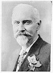

Yıllar boyu büyük araştırmalar yapmış ve hayatını buna adamış olan araştırmacıların en büyük isteği, kayıp kıta Atlantis ve Mu'nun varlığını tüm dünya medeniyetlerine kanıtlayabilmekti. Bu araştırmacıların en önemlisi hiç şüphesiz ki, James Churchward'dür.
Arkeoloji biliminden, özellikle Mu'dan söz edildiğinde ilk akla gelen Churchward'ün adıdır. Bu gerçek araştırmacının yaptığı en büyük araştırma, Mu kıtası ve sembolleridir. Churchward, iki kıtayı birbirinden ayrı ve daha bağımsız düşünmüştür.
Bunun doğru olmadığını kanıtlayacak tabletlere ulaşılamadığından, Atlantis geçmiş dönemlerin en eski efsanesi olarak literatürlerde yer almak zorunda kalmıştır.
Oysa insanoğlunun ilk ayak bastığı anakara Atlantis'tir. Bu gerçeği yok saymak, Atlantis'le olan bağlarımızı göz ardı etmekle aynı anlama gelmektedir.